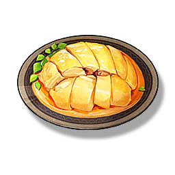

Poached Chicken
Supplies

Restores 90 Stamina.
A must-order dish in the Panhua Restaurant, the poached chicken is added with a special sauce. Some people want to replicate the taste of the Panhua Restaurant's Poached Chicken, but there is always a difference. After all, a restaurant must have some skills.